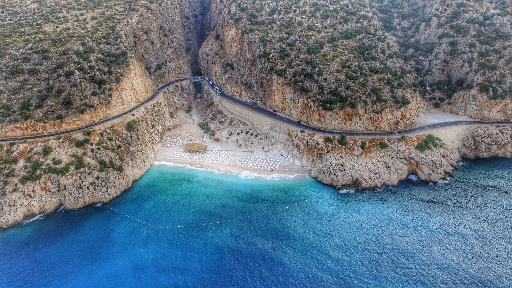
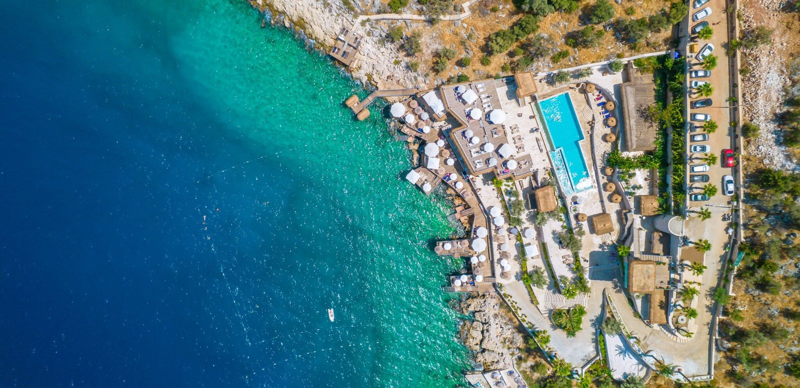
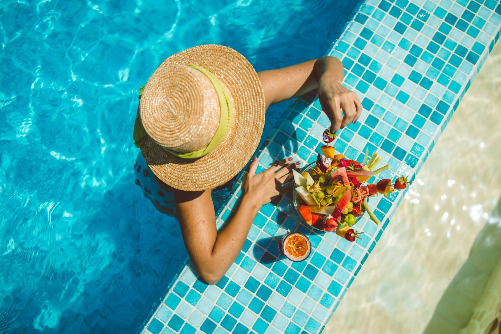

7 дней · 6 ночейКаш × Калкан
Своя вилла над бухтой, утро у бассейна, яхта и долгие вечера на Ликийском побережье.
Камерная группаПрограмма тура ↗
THE HEDONIST CLUB / ПУТЕШЕСТВИЯ ДЛЯ ДЕВУШЕК
Время, которое принадлежит тебе.
Смотреть турыМожно приехать одной. Можно — с подругой.

ВРЕМЯ01 / Куда отправимся
Выберите то, что отзывается сейчас: неспешное море, новый город или остров далеко от повседневности.

7 дней · 6 ночейСвоя вилла над бухтой, утро у бассейна, яхта и долгие вечера на Ликийском побережье.
 Бутик-тур
Бутик-турСтарый город, огни Каспия и гастрономия. Путешествие, у которого есть вкус и своя компания.
 Планируем поездку
Планируем поездкуОкеан вместо ноябрьской суеты. Готовим новое путешествие для девушек — можно узнать о старте первой.
02 / Почему мы путешествуем вместе
The Hedonist Club — о нескольких днях, которые вы выбираете для себя. О красивых местах и удовольствии быть в них. О разговорах, на которые дома всё время не хватает вечера. О компании женщин, которым тоже интересно жить, пробовать и открывать новое.
Искусство жить в удовольствие.
В хорошей компании.
03 / Ценность компании
Путешествия с семьёй дают общие воспоминания, поездки в одиночку — свободу. А поездка с девушками добавляет к новым местам новое окружение и возможность на время отпустить привычные обязанности.
В семейной поездке легко снова оказаться ответственной за всё. Здесь маршрут, встречи и переезды собирают организаторы. У вас появляется время замечать, что нравится именно вам.
Один и тот же закат становится общей историей. За завтраком можно вспомнить вчерашний вечер, за ужином — услышать, как по-разному каждая прожила этот день.
Вас узнают с чистого листа: через разговоры, чувство юмора и то, от чего загораются глаза. Иногда именно вдали от дома легче позволить себе быть разной.
Компания для ужина, прогулки или красивого кадра уже рядом. При этом можно выбрать тихое утро или время с книгой. Близость начинается там, где уважают личный ритм.

04 / Из таких моментов складывается поездка
Длинный стол на всех. Планы, которые хочется обсуждать. Платье, для которого наконец нашёлся вечер. И тот самый смех, когда уже не нужно объяснять предысторию.
Мы продумываем поездки так, чтобы в них оставалось место и для впечатлений, и для жизни между пунктами программы.
05 / Перед первой поездкой
Да. Не нужно ждать, пока совпадут отпуска подруг. Вы можете присоединиться самостоятельно: знакомство и совместные дни — часть формата. Перед поездкой расскажем, как всё устроено, и ответим на ваши вопросы.
Об этом можно спокойно сказать заранее. Расскажем о ритме конкретного тура, совместных активностях и свободном времени, чтобы вы поняли, подходит ли вам поездка.
Присоединиться могут и новые участницы. Расскажите, какой тур вам интересен, — познакомимся и обсудим детали поездки.
Наполнение зависит от направления. Стандартный пакет включает проживание с завтраками, приветственный ужин, экскурсии, поездки по программе и трансфер. Подробнее о том, что входит в выбранный тур, расскажем на консультации.
Выберите направление и напишите в WhatsApp. Обсудим ваш запрос, программу, стоимость и наличие мест. После этого можно принять решение и согласовать бронирование.
Пока мы собираем интерес к поездке на 25 ноября — 2 декабря 2026 года. Напишите, что хотите узнать о старте: сообщим, когда будут готовы программа, условия и стоимость. Обращение не означает бронирование или оплату.
Начнём со знакомства
Напишите, куда хочется отправиться. Расскажем о поездке, ответим на вопросы и вместе поймём, подходит ли вам наш формат.
Написать в WhatsAppЛично с организаторами · +7 777 299 38 81